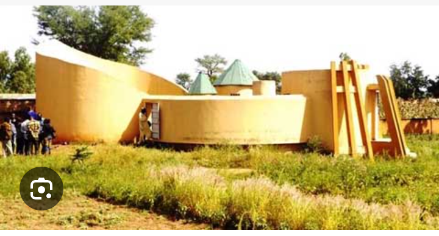

La Maussolé Naaba Oubri
le Mausolée de Naaba oubri, situé à 8 km de Ziniaré sur la route ziniaré-Dapouré, est un site culturel érigé en 1998 par le Ministère en charge de la Culture. Bâtit sur l’architecture des cours royales des mossé, Il a été construit sur la tombe de Naaba Oubri et retrace sa vie et ses œuvres. A l’intérieur du mausolée, il y a la case du roi, la cuisine et le buste du Naaba Oubri.
La maussolé du Naaba Oubri : un lieu à visiter absolument !